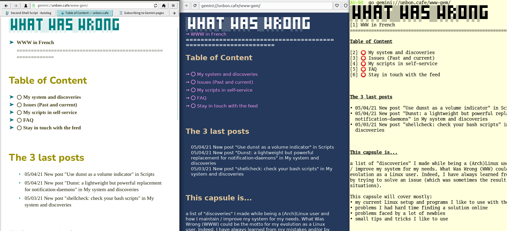

Gemini - a quieter web experience
niceness through simplicity
State of the Web
The world-wide-web
- Modern web browsers support dozens (hundreds) of standards
- CSS
- HTML 4, 5
- Javascript
- audio: .mp3 .ogg …
- graphics: .jpg .gif .png .svg …
- video display: .mp4 .webm …
- cookies
- SSL encryption
- CSS
- Resultant complexity is problematic
- implausible to start from scratch
- security and validation is difficult/impossible
- implausible to start from scratch
Problems with WWW
- User tracking
- cookies, tracking pixels, browser fingerprinting
- cookies, tracking pixels, browser fingerprinting
- Security is broken
- too many (unknown) CAs trusted by default
- too many (unknown) CAs trusted by default
- Pages heavy & hard to know what's downloaded
- DuckDuckGo: 26 requests - 1.3MB of content - 7 scripts
- Google.com: 35 requests - 2.2MB of content - 11 scripts
- DuckDuckGo: 26 requests - 1.3MB of content - 7 scripts
- Layout & formatting defined by the creator
- lots on the screen at once – distracting
- page complexity and weight – accessibility?
- lots on the screen at once – distracting
Gemini
Gemini Overview
Gemini Goals
- Gemini - a new application-level Internet protocol
- for distributing of arbitrary files
- a lightweight hypertext format
- for distributing of arbitrary files
- Gemini is for people who are:
- opposed to the web's ubiquitous tracking of users
- tired of nagging pop-ups, obnoxious adverts, autoplaying videos
- interested in low-power computing and/or low-speed networks
- opposed to the web's ubiquitous tracking of users
- You may think of Gemini as
- "the web, stripped right back to its essence", OR
- "Gopher, souped up and modernised just a little"
- "the web, stripped right back to its essence", OR
Gopher - before the WWW
Problems with Gopher
- intended just for text
- no support for other file types (images, video …)
- no security (plain text transfer)
Gemini goals
- Early Gemini discussion included three clear goals:
- it should be possible to remember the entire protocol spec
after reading it once or twice. - a basic but usable (not ultra-spartan) client should fit
in ≈50 lines of code in a modern language. - a client comfortable for daily use which implements every
single protocol feature should be a feasible weekend
project for a single developer.
- it should be possible to remember the entire protocol spec
- It will be difficult to extend in the future
so it stays simple and privacy conscious
Gemini - Text formatting
- ALL styling is done by the client
- text lines will be wrapped
- preformatted text is not altered or wrapped
- UTF-8 is the default character set
- there's no inline formatting: i.e. no bold/italics
Gemini clients control the page style

Figure 1: Same page in Lagrange, Kristall and AV98 (terminal) browsers
Gemini Markup
- There are five core elements:
- Headings: start with '#' '##' or '###'.
- level 1 header is usually page title.
- level 1 header is usually page title.
- List items: begin with '*'
- Quotes: these lines begin with '>'
- Preformatted text: begins/ends with lines of three backticks (```)
- Links: on a new line, starting with =>
=> https://www.reddit.com Reddit
=> image-dir/giant-peach.jpg
=> gemini://gemini.circumlunar.space/docs/specification.gmi
=> mailto:fred@example.com
=> gemini://podcast.com/episode-1.mp3
- Headings: start with '#' '##' or '###'.
Why not use a subset of HTML?
If the complexity of HTML is the problem, why not use a HTML subset:
- just headers, links and blockquote?
- Answered in FAQ (but briefly), using an HTML subset:
- you could never be sure what a server was sending
- you ask for one page: browser loads 30MB of images and 15 scripts …
- you ask for one page: browser loads 30MB of images and 15 scripts …
- there's no clear delineation between Gemini and HTML sites
- tracking/user profiling would still work
- security of the (huge) browser still a problem
- you could never be sure what a server was sending
Let's see what Gemini users have created
| Demo: let's explore Gemini Space |
What's the protocol: Gemini Request/Response
A Gemini transaction: one request - one response:
- Client: Opens connection
- Server: Accepts connection
- Client/Server: Complete TLS handshake
- Client: Validates server certificate
- Client: Sends one line Request-URL or URL+query-string)
- Server: Sends response header (one line), closes connection
- Server: Sends response body (text or binary data)
- Server: Closes connection
- Client: Handles response
Gemini Uploads are very limited
Requests and response headers are limited to 1024 bytes
- After connecting, Return status '10' uploads data from client:
Client sends gemini://mysite.com/book-request.gmi Server responds 10 What Title: User enters War and Peace Client resends gemini://mysite.com/book-request.gmi?War\%20and\%20Peace server Responds 20 text/gemini; charset=utf-8 The contents of War and Peace
TLS Certificate TOFU vs "Known" Validation
- Gemini uses TLS v1.3 (ideally) or v1.2
- no certificate authority required
- users are based on "Trust on First Use" (TOFU) - like SSH
- no certificate authority required
- Sites can identify returning users by their TLS certificate
- no need for cookies for 'session persistence'
- clients can support multiple certificates - user chooses
- if a certificate is deleted, that identity is gone
- no need for cookies for 'session persistence'
Gemini Software
Gemini Servers
Very little load on server - Raspberry Pi is fine
- Jetforce - written in Python 3
- easy to set up
- has CGI interface
- easy to set up
- Agate - written in Rust
- Installation: gemini://gem.chriswere.uk/gemserver.gmi
- or a video tutorial:
https://share.tube/videos/watch/4fe4e1f0-7896-4b8c-bfb8-2ff19c78d8e5
- Installation: gemini://gem.chriswere.uk/gemserver.gmi
Gemini Browsers
There's lots of gemini software: https://gemini.circumlunar.space/software/
- Lagrange: https://github.com/skyjake/lagrange/releases/tag/v1.4.0
- Kristall: https://github.com/MasterQ32/kristall
- Amfora: - terminal based client
- Playing with Gemini & Amfora: https://www.youtube.com/watch?v=i-iZ3R9U5ug
- Playing with Gemini & Amfora: https://www.youtube.com/watch?v=i-iZ3R9U5ug
- Elpher for Emacs - via Melpa
- Android: Ariane from Play Store
- iPhone/Pad Elaho from App Store and https://github.com/pitr/gemini-ios
Quick overview of Lagrange
Lagrange is the most feature-rich Gemini browser:
- it looks really nice!
- multiple tabs
- subscriptions
- inlining of images and audio
=> gemini://fixato.org/2021-03-18-drawing-with-kiddos-crayons.gmi - clear certificate management
- split-screen view
- available for Linux, Mac and Windows
Gemini's not just text: Images loaded on request
"Built on Gemini"
Subscribing to Gemini pages
Options: Browser detects change in page headings OR simple day-timestamp scheme:
Welcome to my Gemlog, where you can read every Friday about my adventures in urban gardening and abstract algebra!
## My posts
=> bokashi.gmi 2020-11-20 - Early Bokashi composting experiments
=> finite-simple-groups.gmi 2020-11-13 - Trying to get to grips with finite simple groups…
=> balcony.gmi 2020-11-06 - I started a balcony garden!
## Other gemlogs I enjoy
=> gemini://example.com/foo/ Abelard Lindsay's gemlog
=> gemini://example.net/bar/ Vladimir Harkonnen's gemlog
=> gemini://example.org/baz/ Case Pollard's gemlog
from gemini://gemini.circumlunar.space/docs/companion/subscription.gmi
What are people doing with it?
Lots
- Gemini-to-Web proxy - https://portal.mozz.us
- Gemini Quickstart - gemini://geminiquickst.art/
- Gemini Search: gemini://geminispace.info
- Geminispace aggregator - gemini://gemini.circumlunar.space/capcom
- TrouserMonkey.net – gemini://trousermonkey.net
- Blogging Client in 30 lines
– gemini://spool-five.com/gemlog/2021-04-01-second_script.gmi - Blogging – gemini://fixato.org/2020-03-25-an-uneventful-day.gmi
- Podcasts – gemini://gem.chriswere.uk/trendytalk/
- Proxying other services:
- HackerNews - https://news.ycombinator.com/item?id=25986378
- HackerNews - https://news.ycombinator.com/item?id=25986378
Mastodon: https://mastodon.social/tags/gemini
Small Web (smolweb) related sites
- Tilde sites: e.g.
- https://tildeverse.org/
- https://tilde.team/
- gemini://tilde.team – Free Gemini Hosting
- https://tildeverse.org/
- Pubnixes: Public Unix servers
Super Dimensional Fortress:
Interesting Gemini sites
- Konpeito is quarterly Lo-fi hip-hop & chill mixtape - gemini://konpeito.media
- xj9 - tech blog gemini://sunshinegardens.org/~xj9
- Sunshine Gardens: gemini://sunshinegardens.org
- How I use RSS: gemini://gemlog.blue/users/joelchrono12/1612624540.gmi
Progress to Offline first: -
- News sites proxied to Gemini: gemini://simplynews.metalune.xyz
- One Hundred Rabbits (resilience, offline-first, sailing, cooking, Plan9, design):\\ gemini://gemini.circumlunar.space/users/hundredrabbits
- Gembooks & .gpub - an eBook format using Gemini:
Conclusion
- Gemini
- for users
- provides very simple and accessible markup for creating pages
- is suitable for many (but not all) documents
- provides an ad-free, secure, and distraction-free environment
- provides a human-scale community of users
- provides very simple and accessible markup for creating pages
- for developers
- is simple enough to encourage experimentation
- simple gemtext markup is easily mapped to other formats
- has low hardware and network traffic requirements
- is simple enough to encourage experimentation
- for users
QUESTIONS?
Links & Reuse/License
- Links
- Getting Started with Gemini: gemini://geminiquickst.art ← Really Good
- Gemini Home: https://gemini.circumlunar.space
- Gemini Search: gemini://geminispace.info
- Gemini on Mastodon: https://mastodon.social/web/timelines/tag/gemini
- Getting Started with Gemini: gemini://geminiquickst.art ← Really Good
- Reuse this presentation

This presentation is Copyright (C) 2021 Giovanni Moretti.
This work is licensed under a Creative Commons Attribution-ShareAlike 4.0 International License. For more information, go to
http://creativecommons.org/licenses/by-sa/4.0/